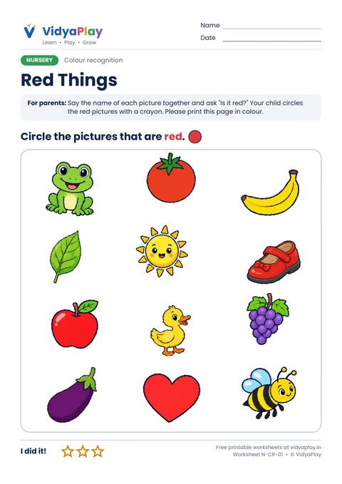
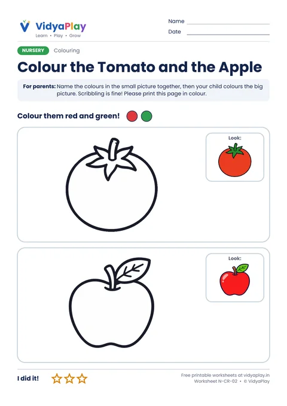
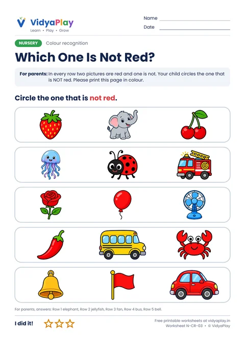
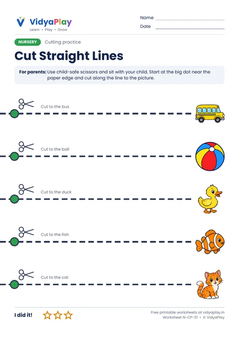
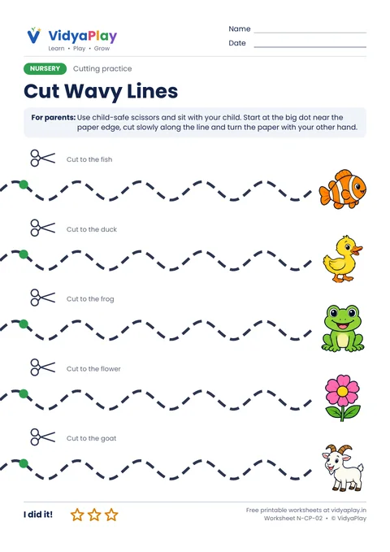
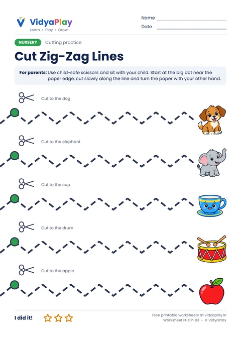
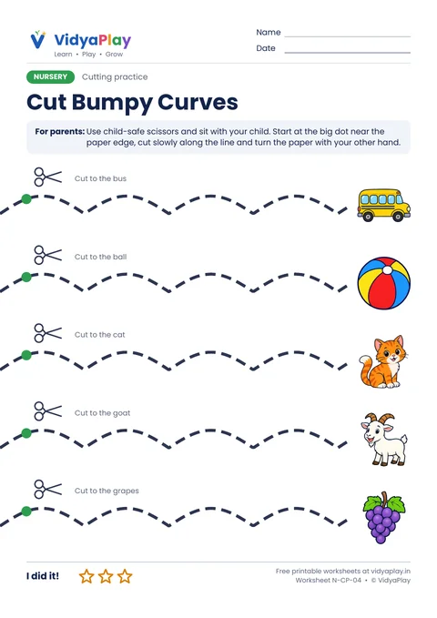
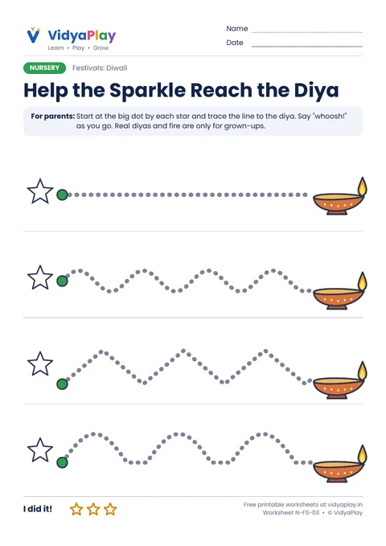
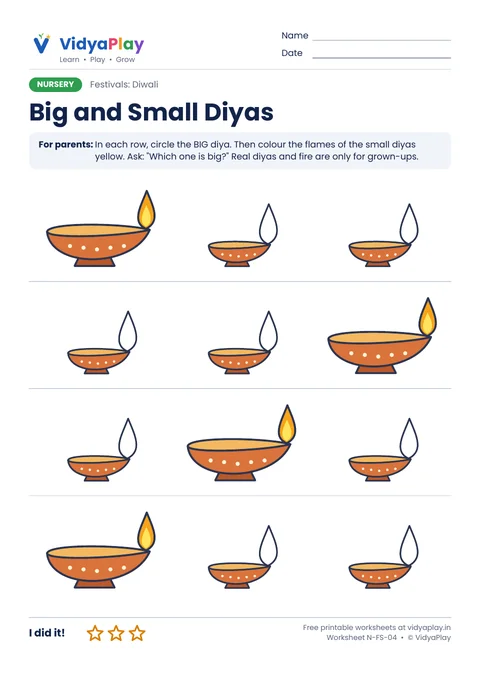

Nursery Worksheets
Gentle first activities for ages 2.5 to 4: lines, colours, dots, snips and little puzzles. Pick a tab below.
Free · A4 PDF · Prints in black and white · Ages 2.5 to 4
Pre-writing
Six basic lines before letters.
-
 N-PW-01
N-PW-01
Standing Lines
Download PDF -
 N-PW-02
N-PW-02
Sleeping Lines
Download PDF -
 N-PW-03
N-PW-03
Slanting Lines
Download PDF -
 N-PW-04
N-PW-04
Curves
Download PDF -
 N-PW-05
N-PW-05
Zig-Zag Lines
Download PDF -
 N-PW-06
N-PW-06
Wavy Lines
Download PDF
Red Colour Worksheets for Nursery
Colour of the week: red! Three happy pages to spot red things, colour a red tomato and a red apple, and find the picture that is not red.
-

N-CR-01Red Things
Circle the pictures that are red.
Download PDF -

N-CR-02Colour the Tomato and the Apple
Colour both pictures red and green.
Download PDF -

N-CR-03Which One Is Not Red?
Circle the one that is not red in every row.
Download PDF
Colouring Pages for Nursery
Big pictures with thick lines, perfect for scribbling. A small colour picture in the corner shows which colours to use.
-
 N-CO-01
N-CO-01
Colour the Apple
Colour me red!
Download PDF -
 N-CO-02
N-CO-02
Colour the Duck
Colour me yellow!
Download PDF -
 N-CO-03
N-CO-03
Colour the Fish
Colour me orange and white!
Download PDF -
 N-CO-04
N-CO-04
Colour the Ball
Colour me red, yellow and blue!
Download PDF
Dot Painting Worksheets
Big circles to dot with a dot marker, a cotton bud dipped in paint, or a fingertip. Great for little hands and counting.
-
 N-DP-01
N-DP-01
Dot the Caterpillar
6 big dots, then 5 balloons.
Download PDF -
 N-DP-02
N-DP-02
Dot the Ladybird
Give the ladybird 6 spots.
Download PDF -
 N-DP-03
N-DP-03
Dot the Grapes
10 grapes and 4 oranges to dot.
Download PDF -
 N-DP-04
N-DP-04
Rangoli Dots
Finish two rangolis with dots.
Download PDF
Cutting Practice Worksheets
Thick lines that start at the edge of the paper, so little ones can begin cutting right away. Straight first, then wavy, zig-zag and curves.
-

N-CP-01Cut Straight Lines
5 straight lines to the pictures.
Download PDF -

N-CP-02Cut Wavy Lines
Gentle waves to the pictures.
Download PDF -

N-CP-03Cut Zig-Zag Lines
Up and down, turn the paper.
Download PDF -

N-CP-04Cut Bumpy Curves
Round bumps to the pictures.
Download PDF
Looking and Thinking Worksheets
Bright pictures to spot, compare and match. These build the looking skills children need before reading and maths.
-
 N-IS-01
N-IS-01
I Spy 3 Balls
Find and circle 3 balls.
Download PDF -
 N-IS-02
N-IS-02
Which One Is Different?
Circle the odd one in each row.
Download PDF -
 N-IS-03
N-IS-03
Match the Shadow
Draw a line to the right shadow.
Download PDF -
 N-IS-04
N-IS-04
What Comes Next?
Easy AB patterns to finish.
Download PDF
Diwali Worksheets for Nursery
Celebrate Diwali with four happy diya pages: dot and colour a big diya, count diyas from 1 to 5, trace lines to the diyas, and find the big diya.
-
 N-FS-01
N-FS-01
Decorate the Diya
Dot the circles, then colour the flame yellow and orange.
Download PDF -
 N-FS-02
N-FS-02
Count the Diyas
Count 1 to 5 diyas and colour the flames.
Download PDF -

N-FS-03Help the Sparkle Reach the Diya
Trace straight, wavy, zig-zag and bumpy lines.
Download PDF -

N-FS-04Big and Small Diyas
Circle the big diya, colour the small flames.
Download PDF